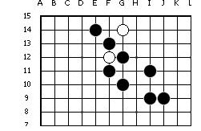

“二重复杂禁手的判断”，二重复杂禁手只存在于三三禁手当中，因为某一个三的活四点存在了禁手，导致这个禁手判断有点复杂。关键要会判断活三的方法。
01，如图：A点是不是禁手点？
02、如图，G11是不是禁手点？
03、如图，A点是不是禁手点？
04、如图，A点是不是禁手点？
05、如图，G11是不是禁手点？

06、如图，A点是不是禁手点？
［ 炫飞水月 于 2011-10-27 21:05:23 时花20金币送鲜花一朵］
［ 于 2011-10-28 11:09:56 时花20金币送鲜花一朵］
［ 于 2011-10-28 11:09:59 时花20金币送鲜花一朵］
［ 于 2011-10-28 11:10:00 时花20金币送鲜花一朵］
［ 于 2011-10-28 11:10:02 时花20金币送鲜花一朵］
［ 于 2011-10-28 11:10:03 时花20金币送鲜花一朵］
［ 于 2011-10-28 11:10:05 时花20金币送鲜花一朵］
［ 于 2011-10-28 11:10:07 时花20金币送鲜花一朵］
［ 于 2011-10-28 11:10:09 时花20金币送鲜花一朵］
［ 于 2011-10-28 11:10:10 时花20金币送鲜花一朵］
［ 炫飞盈儿 于 2011-10-30 11:57:01 时花20金币送鲜花一朵］
1.A 不是禁点
2.G11 是禁点
3.A不是禁点
4.A点不是禁
5.G11是禁点
6.A 点不是禁
［此帖子已被 飞翔 在 2011-10-27 21:22:47 编辑过］
哈哈 图5 我以为最上面的黑子到边了。。
谢谢纠正。。